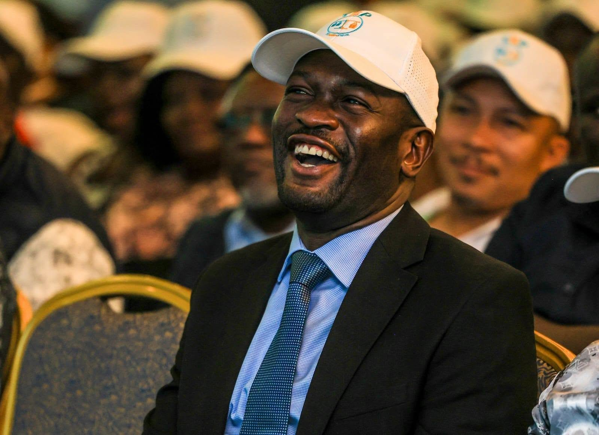

Sifuna Unveils The Equitable Party, Says It Will Become Linda Mwananchi and Accuses Registrar of Fraud
News
A borrowed vehicle. TEP leader Gilbert Marava confirmed that Sifuna would lead the party and be its 2027 presidential candidate. Caroli Omondi told the crowd the formation would be led by a single presidential candidate and that its members would stand united behind Sifuna.
The turnout showed the strength of the Linda Mwananchi coalition. Those present included Siaya Governor James Orengo, Trans Nzoia Governor George Natembeya, Senators Godfrey Osotsi, Richard Onyonka and Boni Khalwale, and MPs including Babu Owino and Caroli Omondi.
Why TEP, and why the rebrand
TEP is a fallback after months of obstruction. The Office of the Registrar of Political Parties (ORPP) declined the movement's application for the Linda Mwananchi name, citing similarity to another outfit using the acronym LINDA. The dispute went to the tribunal. On September 30 the Political Parties Disputes Tribunal set aside the rejection, calling it unconstitutional and noting that the LINDA reservation had lapsed. The reports add that a rival claim by Charles Wanyonyi's Linda Mwananchi Party of Kenya, filed in February 2026, still creates administrative hurdles. Profile Of The Equitable Party, Edwin Sifuna's Platform For The 2027 Elections
Sifuna said the rebrand would come soon. He told supporters that, as resolved by the Linda Mwananchi principals present, the movement would seek to rename the party the Linda Mwananchi Movement in the coming days. The name is protected for now but not yet secured: it has been reserved for 90 days, which gives its promoters time to meet the remaining requirements, though a reservation is not registration.
Not everyone is treating the launch as the main event. Osotsi said Sunday's event was mainly to announce the party the movement is adopting, with a bigger Linda Mwananchi launch to come, though he gave no date.
"Registrar facilitates fraud"
The sharpest moment of the day was Sifuna's attack on the registrar. He accused the ORPP of facilitating political fraud. The allegation was made at the launch, and the reports I found do not show the registrar's response. The ORPP has the right to reply, and a published version of this story should seek its comment.
He also said there is a fallback if the rebrand stalls. If efforts to rename the party run into further obstacles, the formation will carry on under The Equitable Party name. He added that a team of experts is finalising the movement's policy platform for the 2027 election.
Decoys
Khalwale offered a more strategic account of the registration saga. He said the movement deliberately floated several political parties as "decoys" to confuse President William Ruto's camp and protect Sifuna's real vehicle. This is Khalwale's claim and has not been independently verified. It does suggest the allies see the paperwork fight as part of the campaign.
Background
The launch ends Sifuna's search for a political home after he was removed as Orange Democratic Movement Secretary General. Last week, after a leadership retreat, the movement's leaders resolved to end their differences and back him as leader and presidential candidate. TEP, in his words, is the vehicle for sending President Ruto home. Sifuna unveils The Equitable Party as his 2027 vehicle.
The party now has two parallel tasks: building TEP as its immediate vehicle while pursuing the Linda Mwananchi rebrand within the statutory requirements. The 90-day reservation clock, the rival Wanyonyi application, and the registrar's response to the fraud claim will decide whether the Linda Mwananchi name survives to 2027.